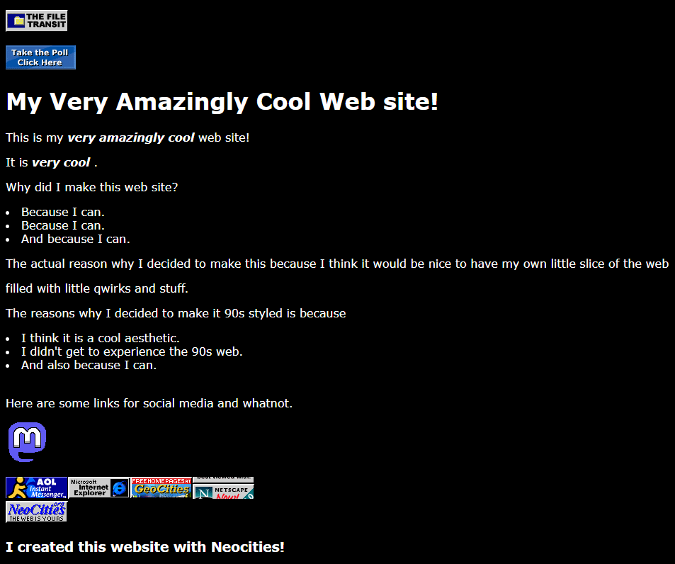
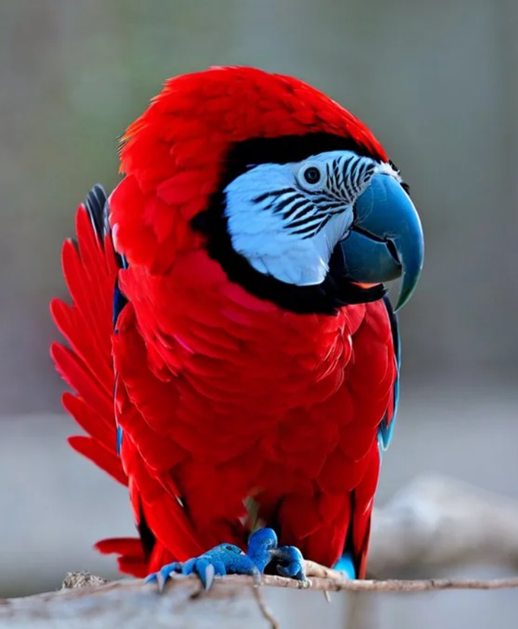
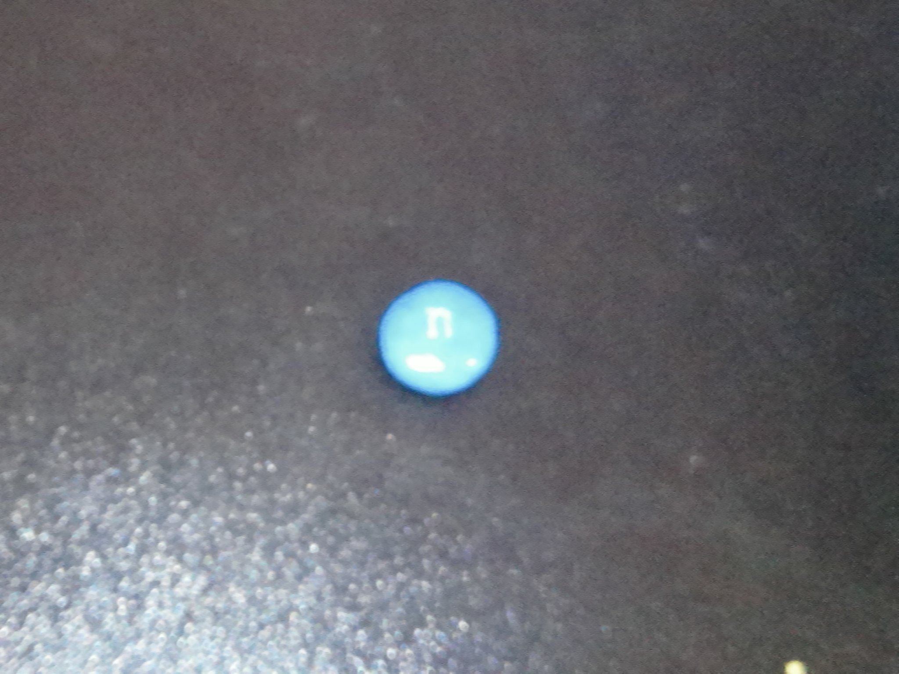
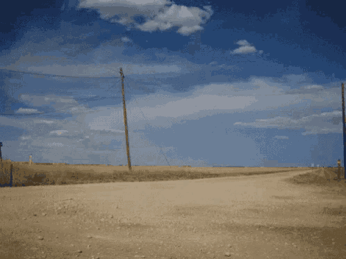
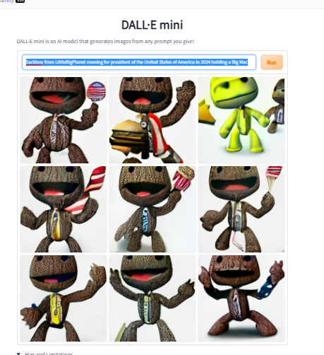

Just got done watching "The Mighty Ducks" for the first time. But on VHS. It was amazing.
It is probably going to turn into snow soon though. (& and also hail)
I made a website! Here is the link: techperson389s-cool-website.neocities.org

Funny pic I found one time

These were posted on Twitter (Now called X)
I found the most horrifying thing this Halloween. A N&N!

gevve gelivve goved. govg vvey.

Do you remember?
The queen of the UK is dead now. Huh.
I wanna play AC Gamecube someday
Got the Minecraft Volume Alpha and Beta albums yesterday. Feelin' good.
I hate how 1.19.1 is being talked about so much. I do understand why. But now about one-fourth of the comments on the original Minecraft trailer are like "that aged well" and such. I just want it to stop.
From where I live, I cannot use any food delivery app as apparently there are no locations near me.

I has a bucket

Someday I wanna have a retro computer with Windows XP just because.
I wish the LittleBigPlanet 1 and 2 servers were still up.
I just learned that @Technothepig died. I should've watched his content before he died. Rest in peace.
If it does happen. I hope Minecraft Java Edition 1.19.1 doesn't get a bad reporting system, and isn't as strict as Bedrock and it bans you from your singleplayer worlds when you get reported on a server.
me when taco bel
What have I done. #dallemini

Can't wait for Minecraft 1.19 to release later today!
Why do people like RE4 remakes so much? It's just the same game. Not like I like the series but it is like if Super Mario Sunshine got like 20 remakes for 10 years. 1 remake is fine.
Any resource packs I could use in Minecraft?
Ok. So, I opened Minecraft Bedrock Edition while I had a Sonic video as background noise. And this is the splash screen text.
There were others from 2021 but they have since been deleted